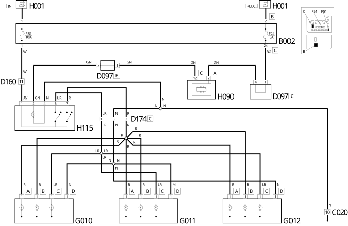

E2510 COURTESY LIGHTS WIRING DIAGRAM
- Path
- Electrical equipment > 1 ELECTRICAL FUNCTIONS > E25 INTERIOR LIGHTING > E2510 COURTESY LIGHTS > E2510 COURTESY LIGHTS WIRING DIAGRAM
- Kind
- topic
- Applies to
- all engines; all production periods
- Interactive page
- https://sloeber94.github.io/elrnDB-fDct/en/#/244001702
Applies to: all engines; all production periods
Wiring Diagram

Components
Component code | Description | Reference to the assembly |
|---|---|---|
JUNCTION UNIT | ||
JUNCTION UNIT UNDER DASHBOARD | - | |
MAXI FUSE BOX ON BATTERY | - | |
DASHBOARD EARTH, DRIVER'S SIDE | - | |
RIGHT REAR EARTH | - | |
DASHBOARD/RIGHT REAR COUPLING | - | |
- | ||
SHORT CIRCUITING COUPLING | - | |
DASHBOARD/OPTIONAL DASHBOARD COUPLING | - | |
RIGHT REAR/LUGGAGE COMPARTMENT COUPLING | - | |
OPTIONAL DASHBOARD/PASSENGER COURTESY LIGHT COUPLING | - | |
INSTRUMENT PANEL | ||
FRONT COURTESY LIGHT | ||
- | ||
PASSENGER AREA REAR COURTESY LIGHT | - | |
TAILGATE COURTESY LIGHT | ||
SWITCH CONTROL PANEL | ||
ADDITIONAL CONTROL PANEL | - | |
PASSENGER COMPARTMENT VENTILATION CONTROL | - | |
SWITCH ON LEFT FRONT DOOR | - | |
SWITCH ON RIGHT FRONT DOOR | - | |
SWITCH ON REAR DOOR | - | |
SWITCH ON RIGHT SLIDING DOOR PILLAR | - | |
- | ||
- | ||
- | ||
- | ||
- | ||
- |
Topics linked from this page (23)
- B001 JUNCTION UNIT
- B002 JUNCTION UNIT UNDER DASHBOARD
- B099 MAXI FUSE BOX ON BATTERY
- C015 DASHBOARD EARTH, DRIVER'S SIDE
- C031 RIGHT REAR EARTH
- D026 DASHBOARD/RIGHT REAR COUPLING
- D042 DASHBOARD/COURTESY LIGHTS COUPLING
- D097 SHORT CIRCUITING COUPLING
- D160 DASHBOARD/OPTIONAL DASHBOARD COUPLING
- D171 RIGHT REAR/LUGGAGE COMPARTMENT COUPLING
- D174 OPTIONAL DASHBOARD/PASSENGER COURTESY LIGHT COUPLING
- E050 INSTRUMENT PANEL
- G010 FRONT COURTESY LIGHT
- G011 PASSENGER AREA FRONT COURTESY LIGHT
- G012 PASSENGER AREA REAR COURTESY LIGHT
- G041 TAILGATE COURTESY LIGHT
- H090 SWITCH CONTROL PANEL
- H115 ADDITIONAL CONTROL PANEL
- H120 PASSENGER COMPARTMENT VENTILATION CONTROL
- I016 SWITCH ON LEFT FRONT DOOR
- I017 SWITCH ON RIGHT FRONT DOOR
- I021 SWITCH ON REAR DOOR
- I105 SWITCH ON RIGHT SLIDING DOOR PILLAR